Seabird At-Sea Spatial Distribution Evidence Dossier
Background
At-sea spatial distribution information for seabirds is essential for understanding species exposure to offshore wind energy development. Species distribution models are a powerful tool for estimating regional patterns of occurrence, but are data intensive and therefore difficult to develop in data-limited regions or for rare or cryptic species.
For this portion of the elicitation workshop, please consider the following scenario:
Our team is estimating seabird exposure to offshore wind energy development off the coast of California. To do this, we are using a dataset of at-sea spatial distributions for seabirds on the outer continental shelf of California, Oregon, and Washington. These distributions were produced using species distribution models that link marine bird survey data with environmental and oceanographic covariates (Leirness et al., 2021). The original study produced seasonal distribution models, which we have averaged to generate estimates of year-round spatial use.
Six seabird species of interest were not observed in sufficient numbers during at-sea surveys to support the development of distribution models. We are therefore asking you to use your knowledge of seabird life history and habitat use to estimate the distribution of these species within the region. To ensure a common baseline of information between expert respondents, we have compiled the most relevant available information on spatial ecology for these species, or for closely related species when species-specific information was unavailable. Please review this background information before providing your responses.
We recognize that some participants may already be familiar with the results of the reference study. This does not preclude participation; however, to reduce the influence of potential past exposure to the blinded data on your responses, please refrain from directly consulting or reviewing the reference dataset (Leirness et al., 2021) when reviewing this dossier or providing your survey responses.
Leirness, Jeffery B, Josh Adams, Lisa T Ballance, et al. Modeling At-Sea Density of Marine Birds to Support Renewable Energy Planning on the Pacific Outer Continental Shelf of the Contiguous United States. OCS Study BOEM 2021-014. US Department of the Interior, Bureau of Ocean Energy Management, 2021.
Pomarine Jaeger
Regional Distribution, Habitat and Movement Information from Birds of the World
Source: Haven Wiley, R. and D. S. Lee (2020). Pomarine Jaeger (Stercorarius pomarinus), version 1.0. In Birds of the World (S. M. Billerman, Editor). Cornell Lab of Ornithology, Ithaca, NY, USA. https://doi.org/10.2173/bow.pomjae.01
Distribution (Wintering)
“Winters from California to Peru (Bent 1921, Murphy 1936, Cramp 1985a), although no reports of large numbers in this area; occasional as far north as central California in winter, the only jaeger regularly present then (Briggs et al. 1987b, Stallcup 1990).”
“Off Washington State, 93% observed >10 km from shore. Off n. California in Sep when numbers of migrants reach a peak, most are seaward of continental shelf; in Oct, as overall numbers decrease, center of density shifts to continental shelf; few birds occur in central axis of California Current 200-500 km offshore (Briggs et al. 1987b). Off Monterey, central California, migrants prefer the zone 3-80 km from shore near concentrations of shearwaters (Stallcup 1990). Off s. California in Oct, most numerous over the outer continental shelf (Briggs et al. 1987b).”
Migration (South of breeding)
“Off Washington and California, the most numerous jaeger in autumn. Off Washington occurs from mid-Jul to mid-Oct, observed on 97% of trips offshore in Aug and Sep; also present in May (Wahl 1975). Off California numerous from mid-Aug into Nov; highest numbers in late Sep and Oct, when 30,000-70,000 estimated in California waters (Briggs et al. 1987b). Off Monterey, central California, migrants pass between mid-Jul and mid-Nov and from mid-Apr through May; prefer the zone 3-80 km from shore near concentrations of shearwaters (Stallcup 1990). Occupies most of Southern California Bight by mid-Sep, reaching maximal numbers in Oct; most numerous over outer continental shelf, near underwater ridge between Santa Rosa I. and Cortés Bank, about 150 km southwest of Los Angeles (Briggs et al. 1987b). In Oct, 1.5-3.6 birds/h reported over continental shelf off s. California; less numerous (<1 bird/h) beyond the shelf (Jehl 1973b).”
Migration (Behavior)
“Migrants accompany flocks of shearwaters in Pacific Ocean (Austin and Kuroda 1953).”
Range Map
Source: Birdlife International Data Zone
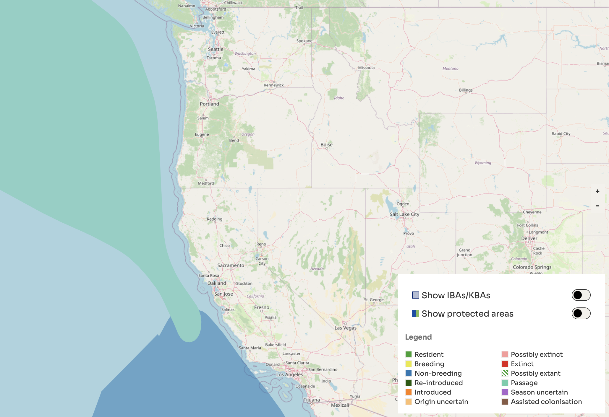
eBird Sightings
Source: eBird
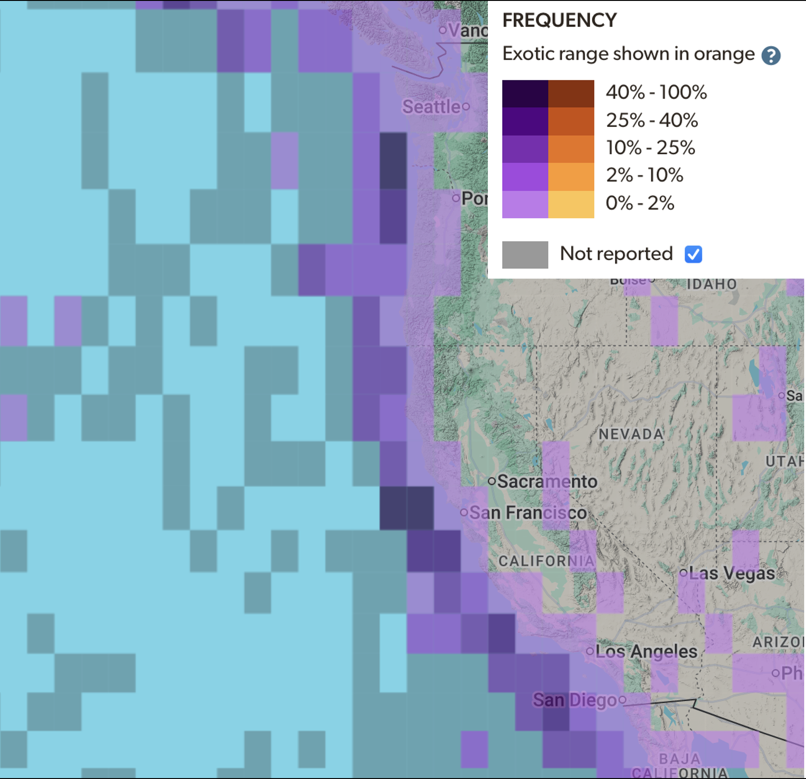
Cassin’s Auklet
Regional Distribution, Habitat and Movement Information from Birds of the World
Source: Ainley, D. G., D. A. Manuwal, J. Adams, and A. C. Thoresen (2020). Cassin’s Auklet (Ptychoramphus aleuticus), version 1.0. In Birds of the World (A. F. Poole, Editor). Cornell Lab of Ornithology, Ithaca, NY, USA. https://doi.org/10.2173/bow.casauk.01
Distribution (breeding)
“On Islands from the middle Baja California peninsula to the Aleutian Islands, Alaska.”
Distribution (wintering)
“The Farallon Is. population apparently is sedentary, remaining year-round in central California waters (Ainley and Boekelheide 1990) but other breeding populations, particularly northern ones, move south, frequenting waters off the continental shelf edge, sometimes as far south as Baja California (Briggs et al. 1987a). On the other hand, auklets that breed in the s. California Channel Is. were tracked northward to central California, once upwelling ceases in the s. California Current (Adams et al. 2004a).”
Habitat (Breeding)
“At sea, distribution is closely allied with mesoscale oceanographic features. In California and Oregon, where during the breeding season conditions in the California Current are typified by upwelling and its plumes, jets and eddies, Cassin’s Auklet is found mainly in association with those features in waters of the outer continental shelf and slope (Hunt et al. 1981; Briggs et al. 1987a; Ainley et al. 1990, 2005, 2009; Ford et al. 2004). Off s. California colonies during the breeding season, auklets are closely associated with the shelf break and over both shallow shelf and deeper basin waters of the Santa Barbara Channel in chlorophyll-rich surface waters typical of relict upwellings (Adams et al. 2004a, 2010). Densities off central California reach 5.1 birds km-2 over a large (100s km2) area, with mean depth of occurrence 354 m (shelf break at 200 m). Highest numbers have been found in the vicinity (<30 km) of the Farallon Is. (Ainley and Boekelheide 1990) or at times south to Monterey Bay (80 km; Ford et al. 2004, Yen et al. 2004), and to the north (<30 km) of San Miguel I. (near Prince I.) in the Santa Barbara Channel where densities can exceed 50 birds km-1 over an area 100s of square kilometers during the breeding season (Adams et al. 2004a, Adams et al. 2010).”
Habitat (Wintering)
“In southern part of the range, found in deep, off-shelf waters (Briggs et al. 1987a, Mason et al. 2007). Off Oregon and California, most abundant near along-shore upwelling front, which largely corresponds to waters overlying the continental slope (Ainley et al. 2005, 2009). Off the Channel Is., s. California, individuals forage along the shelf break or in association with mesoscale eddies, which help to concentrate food (Hunt et al. 1981; Adams et al. 2004a, b). Off Oregon, local abundance has been inversely affected by the presence of trophic competitors, e.g. salmon (Onchorhynchus spp.; Ainley et al. 2009).”
“At-sea density varies by year and region, with auklets less concentrated when food is relatively less available (Ainley et al. 2005, 2009). Near the Farallon Is., CA, over a period of several years, in the post-breeding season, Aug-Nov, density was 1.88 birds km-2; in winter (Nov-Mar),1.32 birds km-2 (Ford et al. 2004). Overall along the central California coast, density = 5.1 birds km-2 (Ainley and Hyrenbach 2010). Off main colonies in s. California, w. Santa Barbara Channel, densities greatest in May (2.75 birds km-2) and January (6.59 birds km-2; Mason et al. 2007). Off Oregon and Washington, densities greatest in the fall over the shelf (3.95 and 2.78 birds km-2 in September and November, respectively (Briggs et al 1992 in Brueggeman 1992).”
“Much less abundant elsewhere off west coast: rare in Puget Sound, WA. No information elsewhere.”
Migration
“Central California populations more or less sedentary, remaining in those waters (Ainley and Boekelheide 1990, Ford et al. 2004); southern populations appear to move north to central California (Adams et al. 2004a); and northern (Alaska and British Columbia) populations appear to move south to California (Briggs et al. 1987a). Briggs et al. (1987a) estimated peak densities of 500,000 to 1,000,000 off the California coast in late fall; such numbers are far above the known combined nesting populations of California, Oregon, Washington, and Mexico (see Appendix). Most of these birds probably come from British Columbia and Alaska, but also from southern California and perhaps Mexico, as well (Adams et al. 2004a).”
“Where sedentary (central California), individuals may frequent colony-sites at night during any month. In Alaska, leave nesting islands after breeding (Sep-Oct) and apparently move south to winter habitat. In 1987 and 1988, large numbers of auklets were seen flying east near Middleton I., AK in late Sep and early Oct (P. Islieb pers. comm.). Channel I., CA, breeding auklets were radio-tracked northward from southern to central California (Adams et al. 2004a).”
Range Map
Source: Birdlife International Data Zone
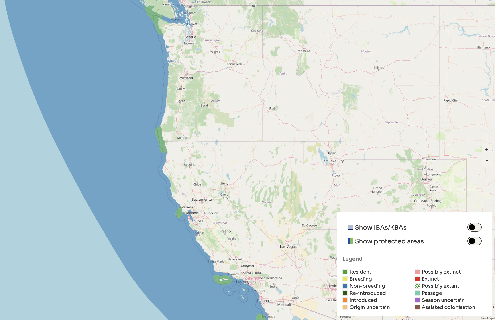
eBird Sightings
Source: eBird
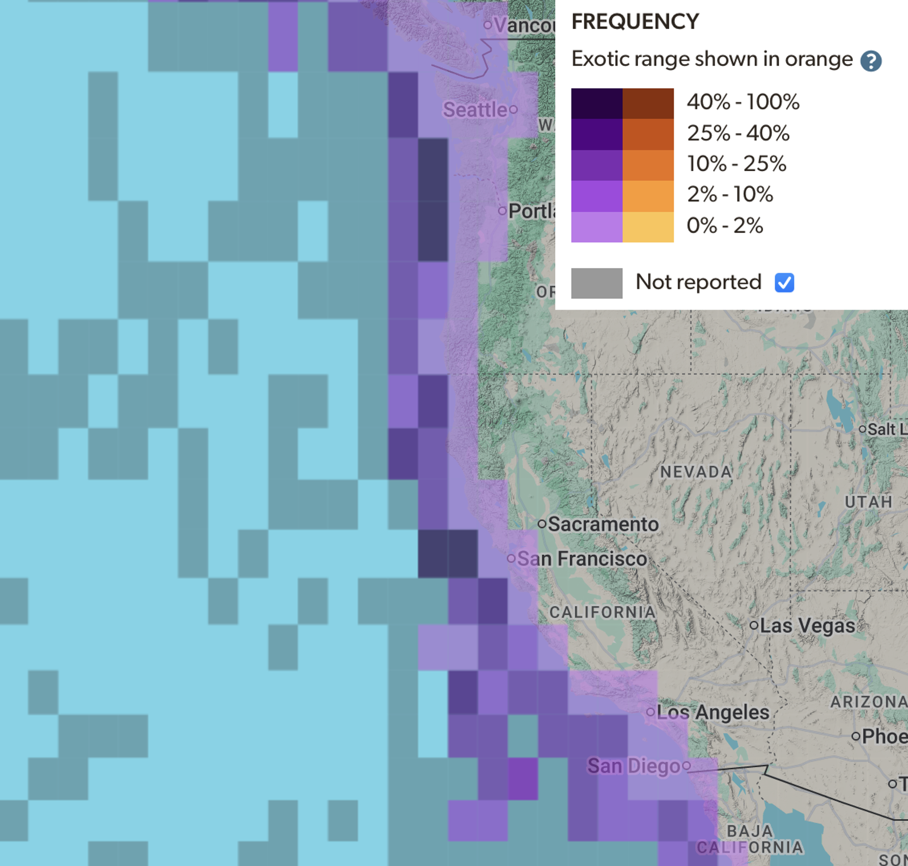
Northern Fulmar
Regional Distribution, Habitat and Movement Information from Birds of the World
Source: Mallory, M. L., S. A. Hatch, and D. N. Nettleship (2020). Northern Fulmar (Fulmarus glacialis), version 1.0. In Birds of the World (S. M. Billerman, Editor). Cornell Lab of Ornithology, Ithaca, NY, USA. https://doi.org/10.2173/bow.norful.01
Distribution (Marine)
“Scattered widely over the n. Pacific Ocean in winter, but common or numerous only north of 35-40°N (Shuntov 1972). Wanders irregularly south to the Pacific Coast of Mexico (Baja California, Sonora) (Tershy et al. 1993).”
Habitat (General)
“Marine, mostly in waters over continental shelf.”
Habitat (Wintering)
“Ranges widely over deep, cold waters in low-arctic regions, often showing clear preference for shelf break habitats (Hunt et al. 1981e, Gould et al. 1982). Generally remains tens to hundreds of kilometers offshore during migration (Mallory et al. 2008a).”
Migration
“Birds breeding on the Semidi Islands, AK, migrate seasonally between nesting grounds in the western Gulf of Alaska and waters of the California Current off Washington, Oregon, and California (Hatch et al. 2010).”
“On Pacific Coast, first arrivals off central California usually late Sep, peak mid-Nov; uncommon to abundant in different years (Cogswell 1977). Occasional stragglers remain through summer in California; most depart by Mar–Apr. Peak numbers in Sep–Nov off British Columbia, but also common (immatures) along entire British Columbia coast in Jul (Morgan et al. 1991b). Some may also remain off W USA (S of breeding areas) throughout year (Howell 2012).”
Range Map
Source: Birdlife International Data Zone
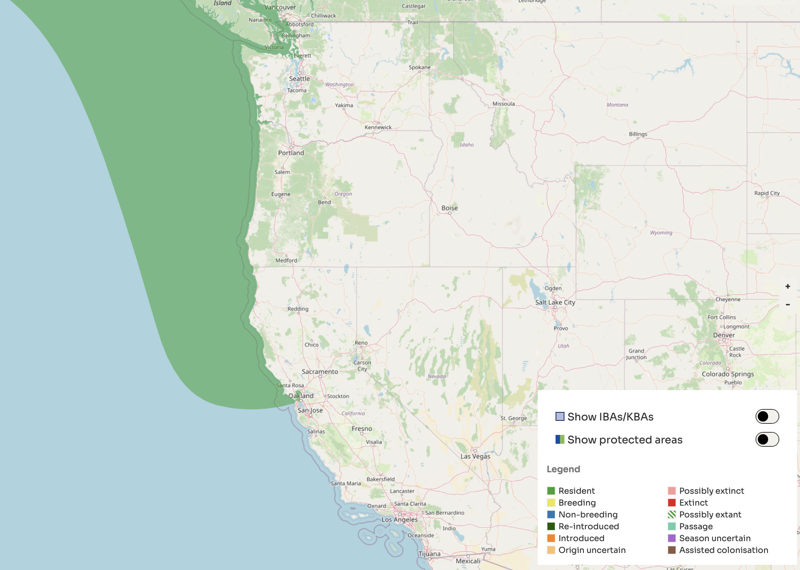
eBird Sightings
Source: eBird
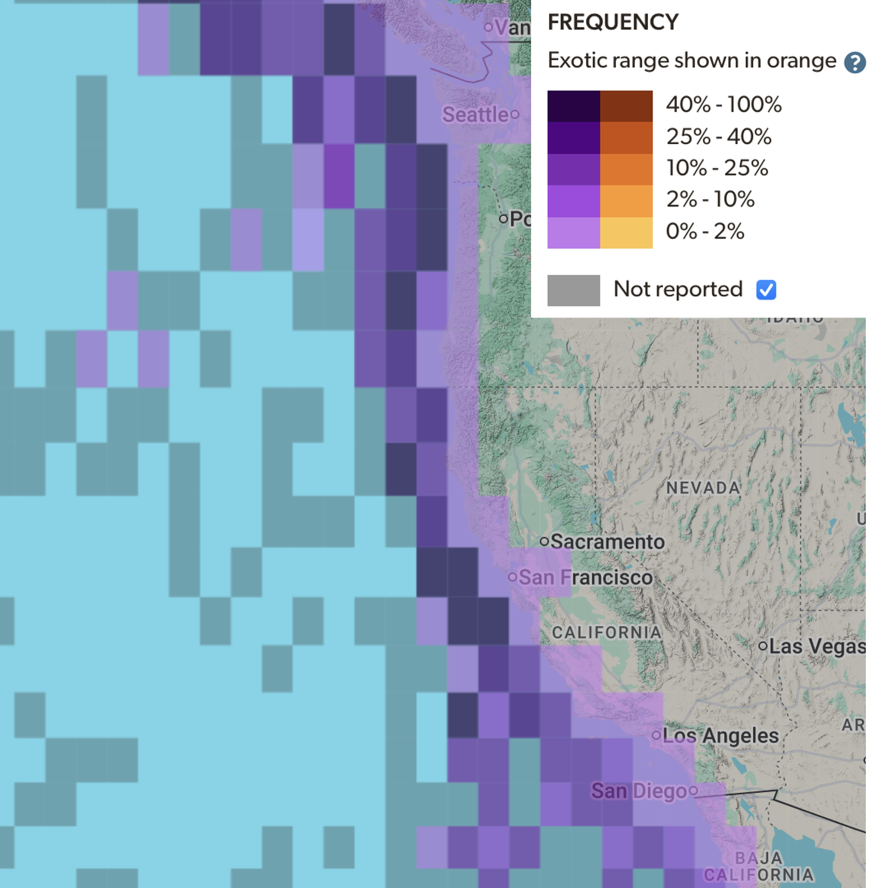
Black-Legged Kittiwake
Regional Distribution, Habitat and Movement Information from Birds of the World
Source: Hatch, S. A., G. J. Robertson, and P. H. Baird (2020). Black-legged Kittiwake (Rissa tridactyla), version 1.0. In Birds of the World (S. M. Billerman, Editor). Cornell Lab of Ornithology, Ithaca, NY, USA. https://doi.org/10.2173/bow.bklkit.01
Distribution (Nonbreeding)
“Winter resident along N. American west coast from British Columbia to n. Baja California, Mexico (Harrington 1975b, Morgan et al. 1991b), with peak densities reported from waters of California Current in central California (Kenyon 1949a, Richardson et al. 2003).”
Habitat (Nonbreeding)
“Pelagic. On a transect between Alaska and Hawaii (Oct-Nov 1976), species associated with surface temperatures from 7.1-13.6°C and salinity range 32.0-33.6 o/oo (Gould 1983). In California, concentrations from shoreline to at least 185 km offshore, with little diminution of numbers; most numerous north of 39°N, highest densities 2-3 birds km2 (Briggs et al. 1987b).”
Migration
“Migration routes of Pacific kittiwakes undocumented; affinity for shelfbreak habitat in winter (Forsell and Gould 1981) suggests shelf edge a likely migration corridor. Kenyon (Kenyon 1949a) inferred a generally coastal migration path from absence of kittiwakes along great circle route between Aleutians and central CA in Nov-Dec. Post-breeding dispersal from colonies to open ocean, usually well away from coast, and perhaps concentrating at continental shelf or other areas of upwelling. In Gulf of Alaska, migrants leave breeding colonies by mid to late Sep, arriving off s. Vancouver I. late Sep – early Oct (Vermeer et al. 1989c). Arrive offshore CA in Nov–Jan; peak California populations Jan-Mar (Briggs et al. 1987b). Kittiwake density (immatures and adults) declines rapidly late Feb – early Mar off s. California; species absent by 1 Apr (Harrington 1975b). Northward movement evident in Mar, Apr, May at Farallon Is. (central CA), with a peak count on 4 Mar 1976 (Richardson et al. 2003). Most wintering kittiwakes absent from California by mid Apr (Briggs et al. 1987b).”
Range Map
Source: Birdlife International Data Zone
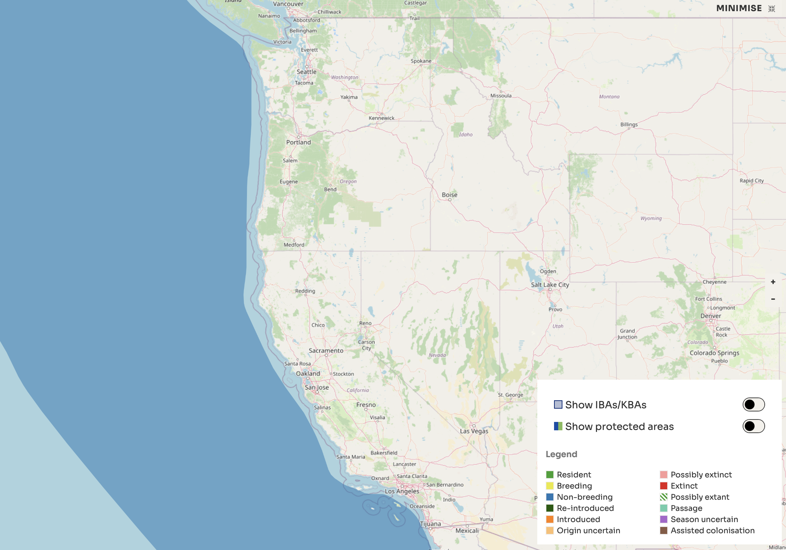
eBird Sightings
Source: eBird
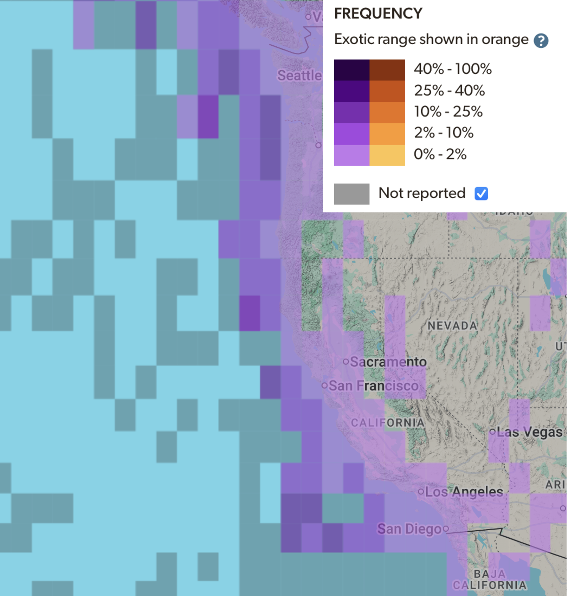
Laysan Albatross
Regional Distribution, Habitat and Movement Information from Birds of the World
Source: Awkerman, J. A., D. J. Anderson, and G. C. Whittow (2020). Laysan Albatross (Phoebastria immutabilis), version 1.0. In Birds of the World (A. F. Poole, Editor). Cornell Lab of Ornithology, Ithaca, NY, USA. https://doi.org/10.2173/bow.layalb.01
Distribution, Habitat and Movement Information
Distribution (marine)
“At sea, Laysans cover a broad range in the North Pacific, north of the northern equatorial current, and they are recorded between latitudes 8°N and 59°N and longitude 132°E and 105°W (longitude 170°E defines the westerly limits of the Am. Ornithol. Union region; Thompson 1951, Fisher and Fisher 1972, Pitman 1985).”
“During the chick brooding period, Laysans from Guadalupe I. near Mexico make clockwise looping trips north of the breeding colony, remaining within 500 km of the western North American coast. During incubation and chick rearing, they travel up to 1500 km from the North American coast, some as far north as the Gulf of Alaska. In recent years, the species has been found annually off California, mostly over deeper water well offshore. Although records exist for every month, Laysans are most numerous from late Oct to Feb (Stallcup 1990).”
Habitat (marine)
“Found in waters between 2°C and 28°C and at air temperatures between -2°C and 26°C (Shuntov 1974). Marine habitat appears to be related to food distribution: individuals feed largely on squid, distribution of which is tied to abundance of shrimp-like euphausids (Fisher and Fisher 1972). Larger euphausids occur in near-surface, eutrophic, cold waters (McDermond and Morgan 1993).”
Range Map
Source: Birdlife International Data Zone
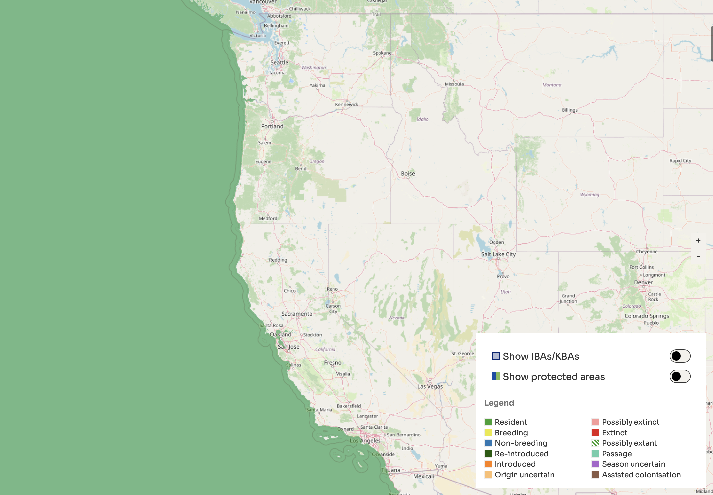
eBird Sightings
Source: eBird
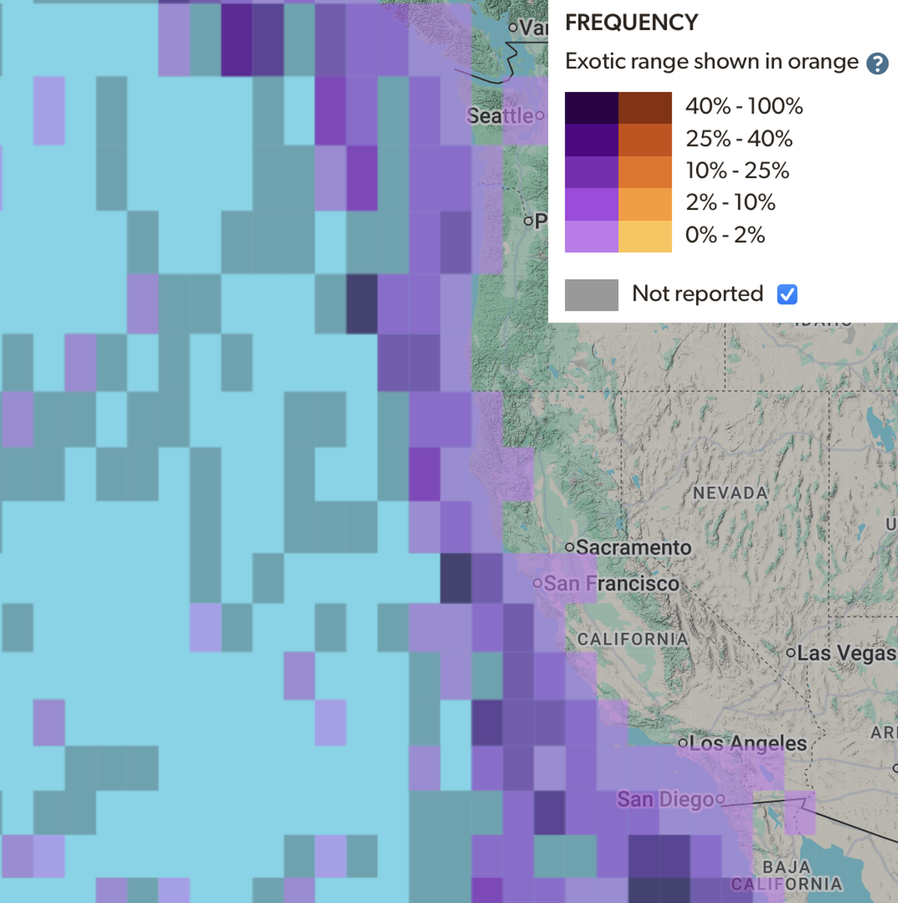
Ashy Storm Petrel
Regional Distribution, Habitat and Movement Information from Birds of the World
Source: Ainley, D. G., W. R. McIver, J. Adams, and M. W. Parker (2021). Ashy Storm-Petrel (Hydrobates homochroa), version 1.1. In Birds of the World (P. G. Rodewald, Editor). Cornell Lab of Ornithology, Ithaca, NY, USA. https://doi.org/10.2173/bow.asspet.01.1
Distribution (breeding)
“Known conclusively to nest, mostly in small numbers, at a minimum of 33 sites (39; Figure 1 and Figure 3 )—therefore, from rocks off Mendocino County, California south to Islas Todos Santos, Baja California, Mexico; at ~15 other, smaller sites, their presence is known but breeding has yet to be confirmed. (39, 40; Bedolla-Guzmán, unpublished data).”
Distribution (Marine)
“Occurs year-round in California Current waters of the continental slope (200–2,000 m deep) and slightly farther to sea from Cape Mendocino, California, south to northern Baja California, Mexico (vicinity of Islas San Benitos). Based on sight records of 2,122 Ashy Storm-Petrels on 23 oceanographic cruises of the eastern North Pacific, 1980–1995, none were seen farther than 260 km from the coast and only a few were seen over the continental shelf (34). Therefore, the species concentrates in a fairly narrow band corresponding to the shelfbreak front. A sighting of 2 individuals farther south than Islas San Benitos (8) was unusual. Large numbers—4,000–6,000 regularly, but occasionally up to 10,000 birds—formerly occurred in flocks each fall in Monterey Bay, south-central California (35, 36, 37), and included birds from both northern and southern California (38). More recently the large flocks in autumn have shifted north to Cordell Bank region, and in north-central California (R. G. Ford, S. Terrill, S. N. G. Howell, J. Casey, D. Shearwater, L. Terrill, and DGA, unpublished data). During spring and summer in the northern part of their range, this species concentrates in the vicinity of the Farallon Islands, San Francisco County, and in the southern part in the vicinity of Channel Islands, Santa Barbara County; during fall and winter, it disperses slightly to occur in offshore waters north to Del Norte County, California (37, 34, 39); sparse records northward into waters off Oregon (Oregon Birding Association 2019; 8 of 10 records in 2014–2016) and even fewer off Washington (Washington Ornithological Society 2019).”
Habitat (Marine)
“Avoids neritic waters overlying the continental shelf but frequents those along the continental slope, i.e. the shelfbreak front region, which in some parts of California (e.g., Monterey Bay) are within a few kilometers of land and in others (e.g., Gulf of the Farallones, Cordell Bank) are ≥ 50 km offshore (34, 38). Densities increase with sea-surface temperature, salinity, and thermocline strength, indicative of association with boundaries of upwelling zones. The California Current is about 400 km wide, but no Ashy Storm-Petrels are seen farther than 260 km from coast; the species is unknown in subtropical waters west or south of the cooler California Current.”
“On the Farallon Islands, Ashy Storm-Petrels arrive immediately after sunset, unlike the Leach’s Storm-Petrel (Oceanodroma leucorhoa) which begins to arrive a couple hours later. This pattern was interpreted to indicate that Ashy Storm-Petrels forage in nearby waters while the Leach’s Storm-Petrels arrive from much farther to sea (supported by at-sea data; 20, 37, 34). On the northern Channel Islands, the nightly pattern of arrival by Ashy Storm-Petrels is slightly later than at the Farallon Islands (1.2 h after sunset), and also earlier by a couple hours than Leach’s Storm-Petrels, which begin to arrive even later than at Farallon Islands (2.7 h after sunset, usually closer to midnight; 19). At San Clemente Island, Ashy Storm-Petrels arrive only 1 h before Leach’s Storm-Petrels (MP). Therefore, it appears that foraging areas for Channel Island-breeding Ashy Storm-Petrels are farther away than those of Farallon-breeding birds, and at both sites, not quite as far as expected for Leach’s Storm-Petrels based on nightly arrival times. Accidental in San Francisco Bay (46).”
Migration
“No migration. Individuals disperse, but not to great distances and only during the period of molt in the autumn (34). Molt is much slower than in the more migratory storm-petrels and extensively overlaps the breeding and dispersal periods (15; see Figure 2 ). Large flocks of molting birds once congregated in offshore waters of Monterey Bay, but now congregate to the north in vicinity of Cordell Bank (R. G. Ford, S. Terrill, S. N. G. Howell, J. Casey, D. Shearwater, L. Terrill, DGA, unpublished data).”
Range Map
Source: Birdlife International Data Zone
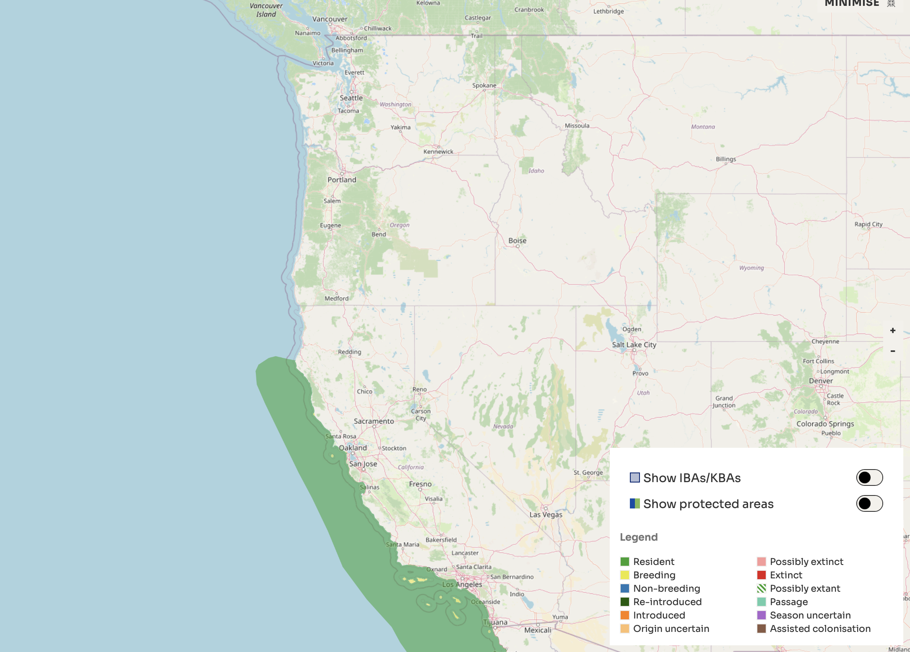
eBird Sightings
Source: eBird
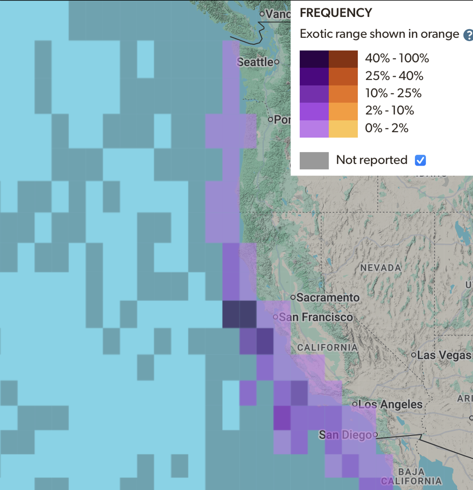